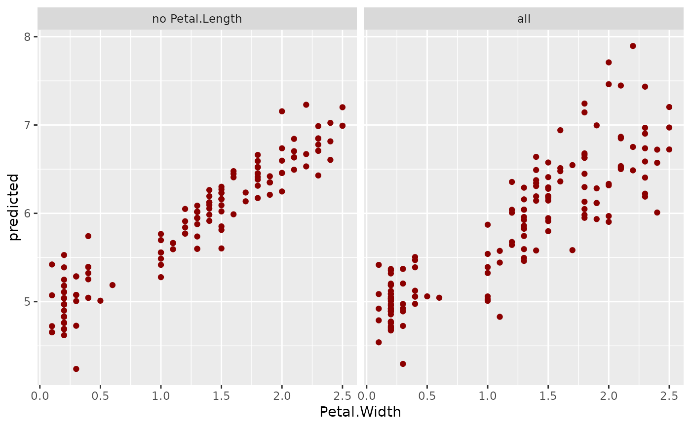
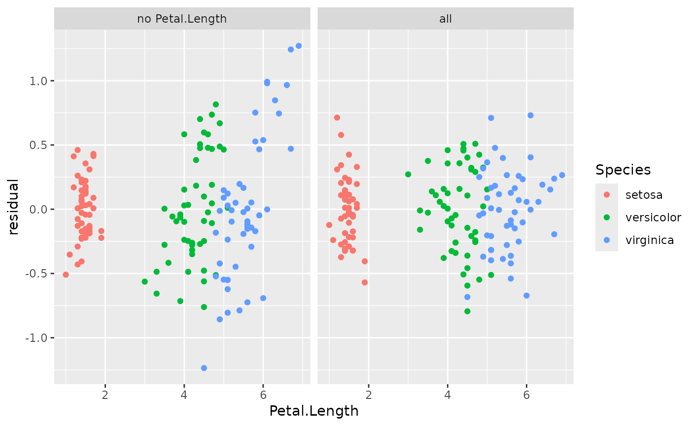

This function prepares values for drawing a scatter plot of predicted values, responses, or residuals against a selected variable.
light_scatter(x, ...)
# S3 method for default
light_scatter(x, ...)
# S3 method for flashlight
light_scatter(
x,
v,
data = x$data,
by = x$by,
type = c("predicted", "response", "residual", "shap"),
use_linkinv = TRUE,
n_max = 400,
seed = NULL,
...
)
# S3 method for multiflashlight
light_scatter(x, ...)An object of class "flashlight" or "multiflashlight".
Further arguments passed from or to other methods.
The variable name to be shown on the x-axis.
An optional data.frame.
An optional vector of column names used to additionally group the results.
Type of the profile: Either "predicted", "response", or "residual".
Should retransformation function be applied? Default is TRUE.
Maximum number of data rows to select. Will be randomly picked.
An integer random seed used for subsampling.
An object of class "light_scatter" with the following elements:
data: A tibble with results.
by: Same as input by.
v: The variable name evaluated.
type: Same as input type. For information only.
light_scatter(default): Default method not implemented yet.
light_scatter(flashlight): Variable profile for a flashlight.
light_scatter(multiflashlight): light_scatter for a multiflashlight.
fit_a <- lm(Sepal.Length ~ . -Petal.Length, data = iris)
fit_b <- lm(Sepal.Length ~ ., data = iris)
fl_a <- flashlight(model = fit_a, label = "no Petal.Length")
fl_b <- flashlight(model = fit_b, label = "all")
fls <- multiflashlight(list(fl_a, fl_b), data = iris, y = "Sepal.Length")
plot(light_scatter(fls, v = "Petal.Width"), color = "darkred")

sc <- light_scatter(fls, "Petal.Length", by = "Species", type = "residual")
plot(sc)
